Jenis-Jenis Bangun Ruang
Berikut ini akan kami berikan macam-macam dari bangun ruang, mulai dari bangun ruang sisi datar yang meliputi kubus, balok, prisma, dan limas. Hingga bangun ruang sisi lengkung yang meliputi kerucut, tabung, dan bola.Kubus
Kubus adalah bangun ruang tiga dimensi yang dibatasi oleh enam bidang sisi yang kongruen berbentuk bujur sangkar.
Sifat-Sifat Bangun Kubus: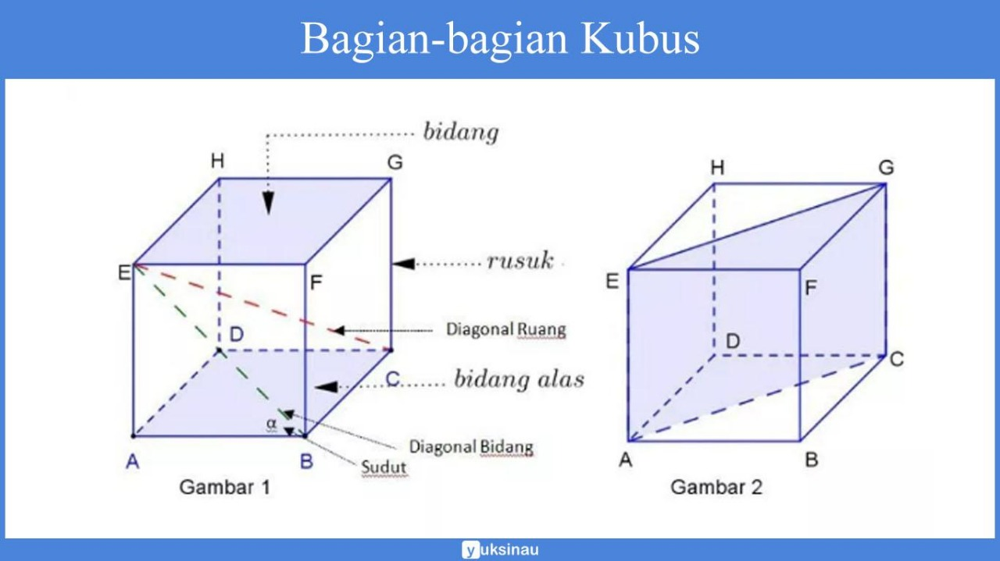
- Memiliki 6 sisi berbentuk persegi yang sama luas.
- Memiliki 12 rusuk yang sama panjang.
- Memiliki 8 titik sudut.
- Memiliki 4 diagonal ruang.
- Memiliki 12 bidang diagonal.
Balok
Balok adalah bangun ruang tiga dimensi yang dibentuk oleh tiga pasang persegi atau persegi panjang, dengan paling tidak satu pasang di antaranya berukuran berbeda.
Sifat-Sifat Bangun Balok :
- Memiliki 6 sisi berbentuk persegi panjang
- Memiliki 12 rusuk
- Memiliki 8 titik sudut
- Memiliki 4 buah diagonal ruang
- Memiliki 12 buah bidang diagonal
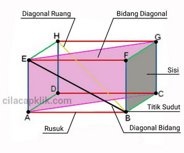
gambar diambil dari : cilacapklik.com
{kind=link}
Prisma
prisma adalah bangun ruang tiga dimensi yang dibatasi oleh alas dan tutup identik berbentuk segi-n dan sisi-sisi tegak berbentuk persegi atau persegi panjang. Dengan kata lain prisma adalah bangun ruang yang mempunyai penampang melintang yang selalu sama dalam bentuk dan ukuran.
Macam-macam Bangun Prisma :
- Prisma Segitiga
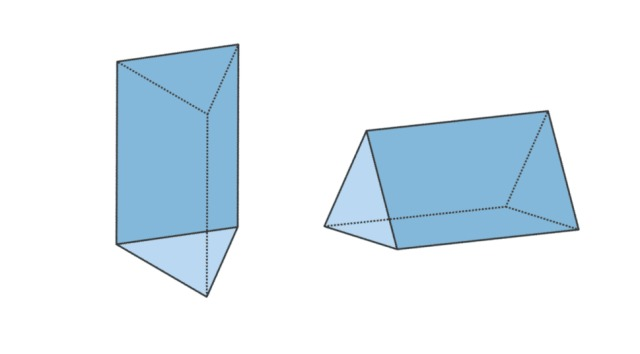
gambar diambil dari : blue.cumparan.com
-
Sifat-Sifat Bangun Prisma Segitiga :
- Memiliki 5 sisi
- Memiliki 9 rusuk
- Memiliki 6 titik sudut
- Memiliki 5 sisi
- Prisma Segiempat
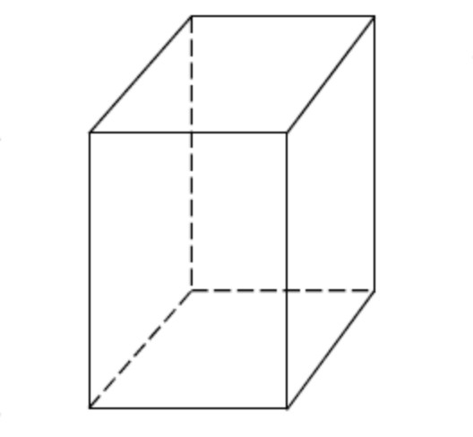
gambar diambil dari : caraharian.com
- Prisma Segilima
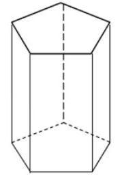
gambar diambil dari : id-static.z-dn.net
- Memiliki 7 sisi
- Memiliki 15 rusuk
- Memiliki 10 titik sudut
- Prisma Segienam
- Memiliki 8 sisi
- Memiliki 18 rusuk
- Memiliki 12 titik sudut
{kind=link}
{kind=link}
{kind=link}
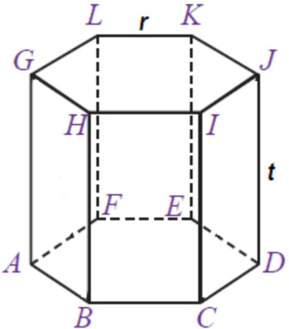
gambar diambil dari : rumusrumus.com
{kind=link}
- Memiliki n+2 sisi
- Memiliki 3xn rusuk
- Memiliki 2xn titik sudut
Limas
limas adalah bangun ruang tiga dimensi yang dibatasi oleh alas berbentuk segi-n dan sisi-sisi tegak berbentuk segitiga.
Macam-macam Bangun limas :
- limas Segitiga
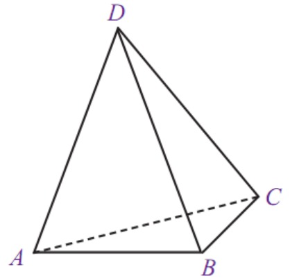
gambar diambil dari : rumusrumus.com
- Memiliki 4 sisi
- Memiliki 6 rusuk
- Memiliki 4 titik sudut
- Memiliki 4 sisi
- Limas Segiempat
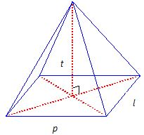
gambar diambil dari : gurubelajarku.com
- Memiliki 5 sisi
- Memiliki 8 rusuk
- Memiliki 5 titik sudut
- Memiliki 5 sisi
- Limas Segilima
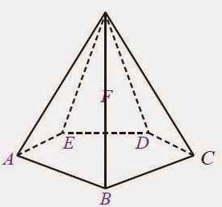
gambar diambil dari : rumusrumus.com
- Memiliki 6 sisi
- Memiliki 10 rusuk
- Memiliki 6 titik sudut
- Memiliki 6 sisi
- limas Segienam
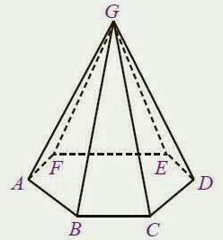
gambar diambil dari : id-static.z-dn.net
- Memiliki 7 sisi
- Memiliki 12 rusuk
- Memiliki 7 titik sudut
Secara umum sifat dari bangun limas adalah :
- Memiliki n+1 sisi
- Memiliki 2xn rusuk
- Memiliki n+1 titik sudut
- Memiliki 7 sisi
- limas Segitiga
Kerucut
kerucut adalah sebuah limas istimewa yang beralas lingkaran.
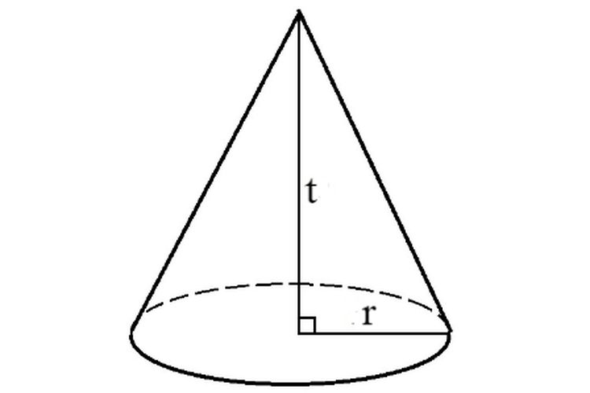
gambar diambil dari : asset.kompsas.com
- Memiliki 2 sisi
- Memiliki 1 rusuk
- Memiliki 1 titik sudut
- Memiliki 2 sisi
Tabung
Tabung atau silinder adalah bangun ruang tiga dimensi yang dibentuk oleh dua buah lingkaran identik yang sejajar dan sebuah persegi panjang yang mengelilingi kedua lingkaran tersebut.
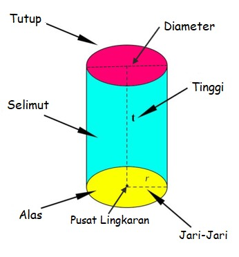
gambar diambil dari : geogebra.org
- Memiliki 3 sisi
- Memiliki 3 sisi
Bola
Bola merupakan salah satu bangun ruang sisi lengkung yang dibatasi oleh satu bidang lengkung. Atau juga bisa didefinisikan sebagai sebuah bangun ruang berbentuk setengah lingkaran yang diputar mengelilingi garis tengahnya.
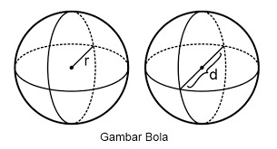
gambar diambil dari : haloedukasi.com
- Bola memiliki 1 sisi serta 1 titik pusat.
- Bola tidak memiliki rusuk dan titik sudut
- Bola memiliki 1 sisi serta 1 titik pusat.
{kind=link}
{kind=link}
{kind=link}
{kind=link}
{kind=link}
{kind=link}
{kind=link}